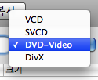
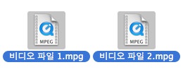
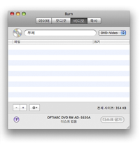
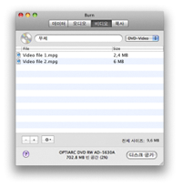
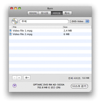

비디오 디스크 굽기:
Burn은 4가지 형식의 비디오 디스크를 만들 수 있습니다. VCD는 최초의 디지털 비디오 형식입니다. 그 후 더 높은 해상도를 가진 SVCD가 등장하였고, 현재의 가장 일반적인 디지털 비디오 배포 방식이 된 DVD 비디오 디스크가 등장하였습니다. 현대의 많은 DVD 플레이어는 DivX 디스크를 재생할 수 있는데, 이 형식은 특히 인터넷상에서 인기가 있습니다. DivX 파일은 DVD 비디오 디스크에 사용되는 MPEG2보다도 크기가 작은 경우가 많은데, 그러면서도 여전히 적절한 화질과 음향 품질을 유지하고 있습니다.
1 형식을 선택합니다
팝업 메뉴에서 형식을 선택합니다. 사용하고 계시는 재생 장치가 어떤 형식의 비디오 디스크를
지원하는지 알고 계셔야만 합니다. 지원되는 형식을 확인하기 위해 재생 장치의 사용 설명서를 읽으십시오.

2 비디오 파일을 선택합니다
비디오 파일들을 선택합니다. 대부분의 비디오 파일이 지원됩니다.
주의: 몇몇 보호된 QuickTime 파일은 사용할 수 없습니다.

3 목록으로 끌어다 놓습니다:
선택된 파일들을 목록으로 끌어다 놓습니다. 만약 파일들이 이미 올바른 형식이라면 그대로 목록에 추가될 것입니다.
만약 올바른 형식이 아닐 경우 Burn은 이들을 올바른 형식으로 변환할 것인지 물어 올 것입니다.
 


4 "디스크 굽기"를 클릭합니다
클릭하면 대화 상자가 열릴 것입니다.

5 옵션을 선택합니다
굽기 세션의 옵션을 선택합니다. 더 자세한 설정을 하고 싶으시다면 Burn 메뉴 아래의 환경설정 메뉴를 선택하십시오.

6 디스크를 굽습니다
이제 디스크를 굽기 위하여 "디스크 굽기" 버튼을 클릭합니다.

7 Burn이 디스크를 구울 것입니다
디스크를 굽는 동안 Burn은 대화 상자에서 구워지는 상태를 보여드릴 것입니다.